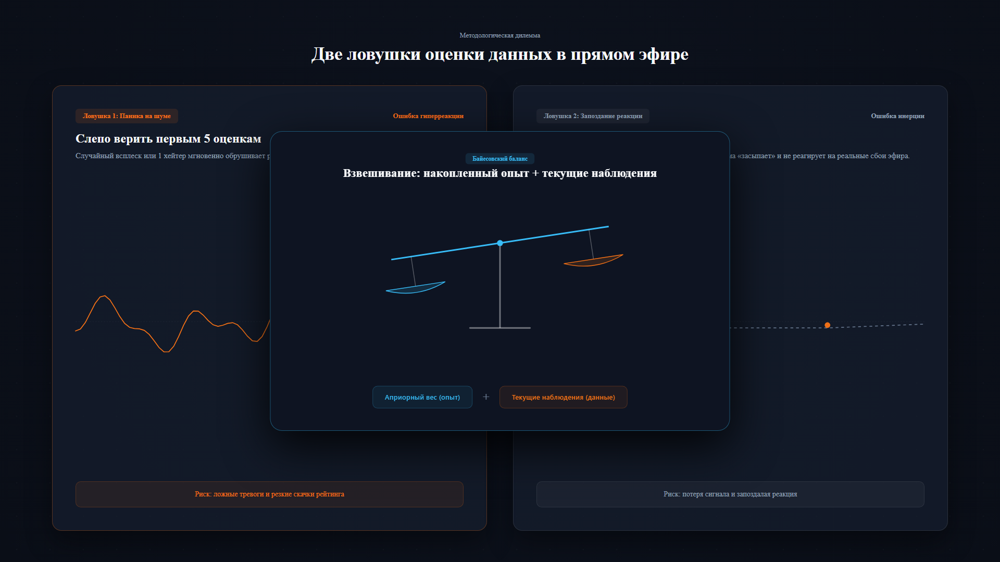
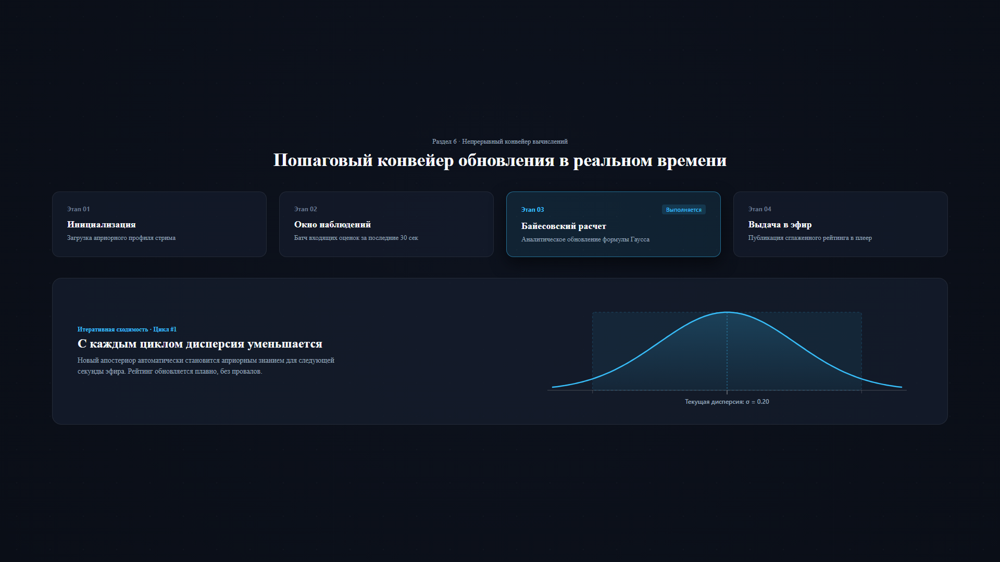
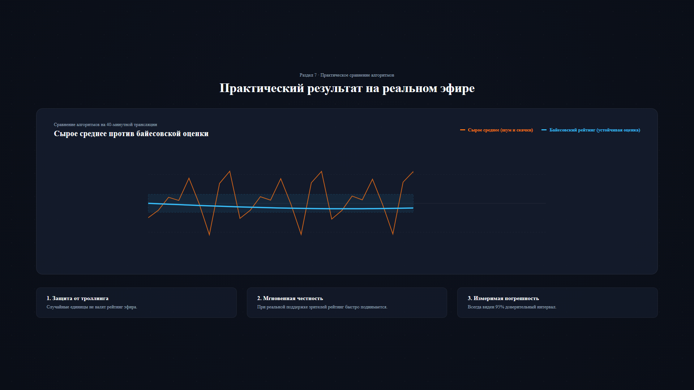

⏱ Хронометраж: 05:00 мин • 9000 кадров • 30 fps
Галерея сцен
Ключевые кадры оформления без ИИ-слопа
8 глав фильма

Сцена 1 (00:00 – 00:40)
Пульт аналитики прямого эфира и сходимость траектории

Сцена 2 (00:40 – 01:20)
Две ловушки: паника на шуме против слепой инерции

Сцена 3 (01:20 – 02:00)
Три шага: Априор → Правдоподобие → Апостериор

Сцена 4 (02:00 – 02:35)
Математическая формула байесовского взвешивания

Сцена 5 (02:35 – 03:00)
Автоматическое взвешивание: N = 10 против N = 10 000

Сцена 6 (03:00 – 03:45)
Непрерывный конвейер вычислений и сжатие дисперсии

Сцена 7 (03:45 – 04:30)
Практический результат: стабильный коридор рейтинга

Сцена 8 (04:30 – 05:00)
Итоговое заключение и титры авторов